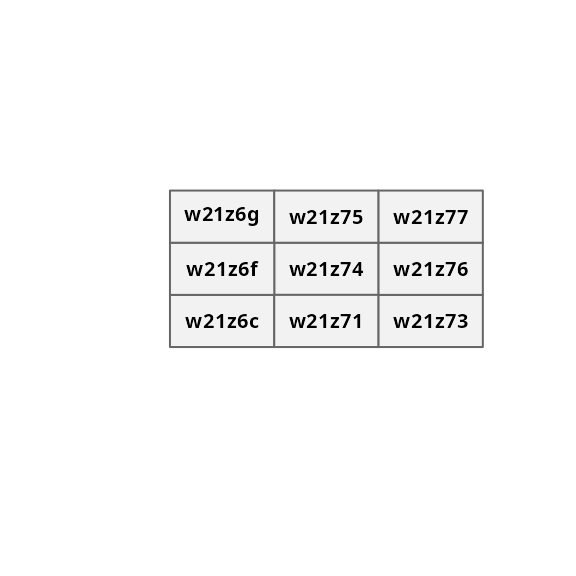
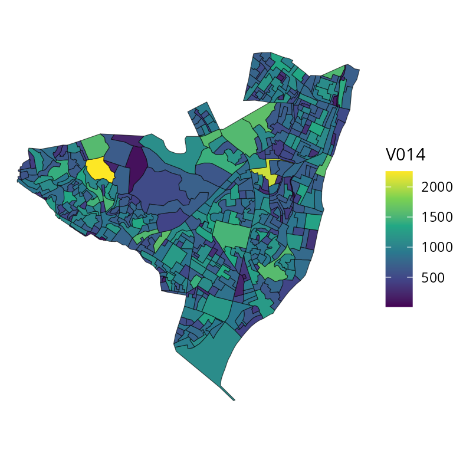
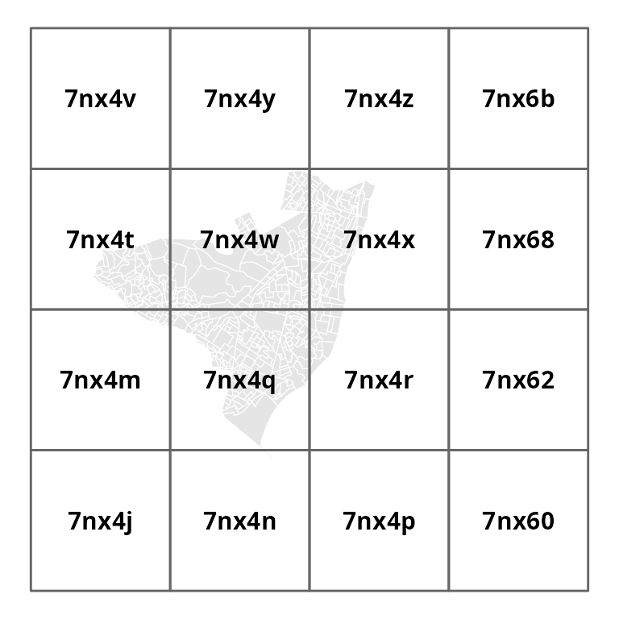
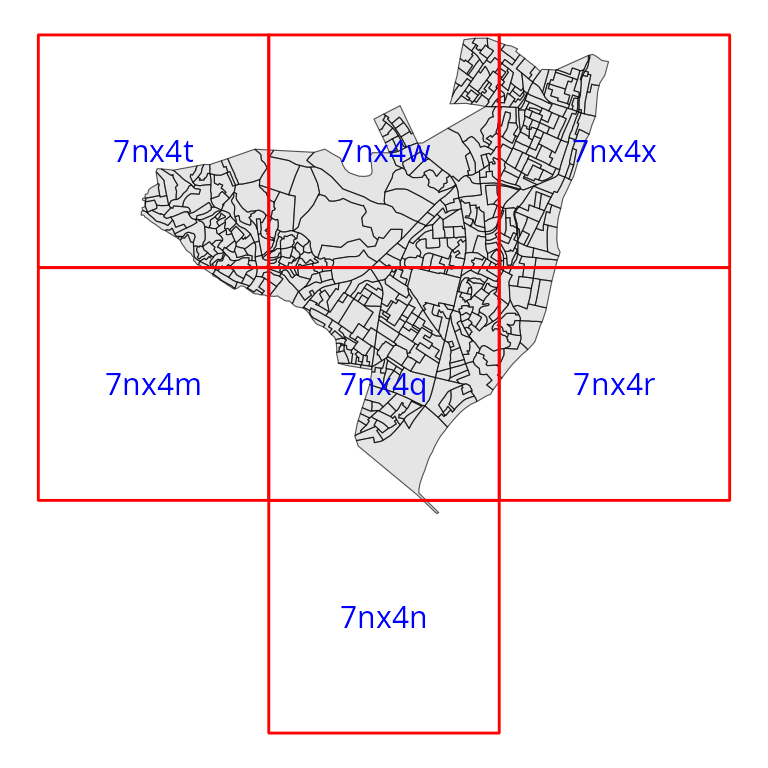

Developed by Gustavo Niemeyer, the geohash is system of nestable, compact global coordinates based on Z-order curves. The system consists of carving the earth into equally-sized rectangles (when projected into latitude/longitude space) and nesting this process recursively. Geohashes are a grid-like hierarchical spatial indexing system. The precision of a geohash is dictated by the length of the character string that encodes it.
The geohash system is useful for indexing or aggregating point data with latitude and longitude coordinates. Each geohash of a given length uniquely identifies a section of the globe.
#> Geohash.Length KM.error
#> 1 1 2.5e+03
#> 2 2 6.3e+02
#> 3 3 7.8e+01
#> 4 4 2.0e+01
#> 5 5 2.4e+00
#> 6 6 6.1e-01
#> 7 7 7.6e-02
#> 8 8 1.9e-02Encoding is the process of turning latitude/longitude coordinates into geohash strings. For example, Parque Nacional Tayrona in Colombia is located at roughly 11.3113917 degrees of latitude, -74.0779006 degrees of longitude. This can be expressed more compactly as:
library(geohashTools)
gh_encode(11.3113917, -74.0779006)
#> [1] "d65267"These 6 characters identify this point on the globe to within 1.2 kilometers (east-west) and .6 kilometers (north-south).
The park is quite large, and this is too precise to cover the park;
we can “zoom out” by reducing the precision (which is the number of
characters in the output, 6 by default):
gh_encode(11.3113917, -74.0779006, precision = 5L)
#> [1] "d6526"We can use this as a simple, regular level of spatial aggregation for spatial points data. Here with randomly-selected coordinates:
coords = data.frame(
x=rnorm(20L),
y=rnorm(20L)
)
gh <- gh_encode(coords$x, coords$y)
gh
#> [1] "kpb249" "s0032q" "7zx44k" "kpbxby" "s017dc" "ebpytc" "7zxmds" "7zzyxd"
#> [9] "7zzqt5" "7zyyms" "kpbsv7" "s005s4" "s025tx" "kp9nsz" "s004ft" "7zxvku"
#> [17] "7zyth8" "7zzz9w" "ebpg0f" "kpbfb3"The reverse of encoding geohashes is of course decoding them – taking
a given geohash string and converting it into global coordinates. For
example, the Ethiopian coffee growing region of Yirgacheffe is roughly
at sc54v:
gh_decode('sc54v')
#> $latitude
#> [1] 6.130371
#>
#> $longitude
#> [1] 38.21045It can also be helpful to know just how precisely we’ve identified
these coordinates; the include_delta argument gives the
cell half-widths in both directions in addition to the cell
centroid:
gh_decode('sc54v', include_delta = TRUE)
#> $latitude
#> [1] 6.130371
#>
#> $longitude
#> [1] 38.21045
#>
#> $delta_latitude
#> [1] 0.02197266
#>
#> $delta_longitude
#> [1] 0.02197266For more detail on precision, see the table earlier on this vignette which shows the approximate level potential delta at different precision levels.
In terms of latitude and longitude, all geohashes with the same
precision have the same dimensions (though the physical size of the
“rectangle” changes depending on the latitude); as such it’s easy to
figure out thecell half-widths from the precision alone using
gh_delta:
gh_delta(5L)
#> [1] 0.02197266 0.02197266You can also pass entire vectors into gh_decode to
decode multiple geohashes at once.
gh_decode(gh)
#> $latitude
#> [1] -1.398010254 0.255432129 -2.436218262 -0.008239746 0.623474121
#> [6] 1.150817871 -1.820983887 -0.249938965 -0.244445801 -0.282897949
#> [11] -0.552062988 0.628967285 2.062683105 -1.628723145 0.513610840
#> [16] -1.864929199 -0.524597168 -0.052185059 0.541076660 -0.914611816
#>
#> $longitude
#> [1] 0.46691895 0.36804199 -1.30187988 0.74157715 1.88415527 -0.09338379
#> [7] -0.93933105 -0.01647949 -0.82946777 -1.51062012 0.93933105 0.18127441
#> [13] 0.24719238 1.62048340 0.11535645 -0.13732910 -1.90612793 -0.28015137
#> [19] -0.31311035 1.07116699One unfortunate consequence of the geohash system is that, while
geohashes that are lexicographically similar (e.g. wxyz01
and wxyz12) are certainly close to one another, the
converse is not true – for example, 7gxyru and
k58n2h are neighbors! Put another way, small movements on
the globe occasionally have visually huge jumps in the geohash-encoded
output.
The gh_neighbors function is designed to address this.
Calling gh_neighbours will return all of the geohashes
adjacent to a given geohash (or vector of geohashes) at the same level
of precision.
For example, the Merlion statue in Singapore is roughly at
w21z74nz, but this level of precision zooms in a bit too
far. The geohash neighborhood thereof can be found with:
gh_neighbors('w21z74nz')
#> $self
#> [1] "w21z74nz"
#>
#> $southwest
#> [1] "w21z74nw"
#>
#> $south
#> [1] "w21z74ny"
#>
#> $southeast
#> [1] "w21z74pn"
#>
#> $west
#> [1] "w21z74nx"
#>
#> $east
#> [1] "w21z74pp"
#>
#> $northwest
#> [1] "w21z74q8"
#>
#> $north
#> [1] "w21z74qb"
#>
#> $northeast
#> [1] "w21z74r0"There are helper functions for converting geohashes into
sf class objects.
The gh_to_sf function converts a geohash or vector of
geohashes into a spatial object of sf class. Consider the
previous example with the Singapore Merlion.
library(sf)
merlion_ghs <- gh_neighbors('w21z74')
merlion_nbhd <- gh_to_sf(merlion_ghs)
# Example plot of geohashes neighbouring w21z74
plot(st_geometry(merlion_nbhd), col = 'grey95', border = 'grey40', reset = FALSE)
text(
st_coordinates(st_centroid(merlion_nbhd)),
labels = row.names(merlion_nbhd),
cex = 0.65, font = 2L
)
Sometimes we have spatial features (like points or polygons) that we
want to aggregate or index using geohashes. The gh_covering
function produces a grid of geohashes that overlap with the spatial
object. For this function to work, the spatial object has to be in the
WGS84 (EPSG 4326) coordinate
reference system that the geohashes use.
Let’s use the Olinda census tract dataset included in the
sf package.
library(ggplot2)
olinda <- st_read(system.file('shape/olinda1.shp', package = 'sf'), quiet = TRUE)
olinda_4326 <- st_transform(olinda, crs = 4326L)
ggplot() +
geom_sf(data = olinda_4326, aes(fill = V014)) +
scale_fill_viridis_c() +
theme_void()
By default, gh_covering creates a grid that covers the
extent of the bounding box for the spatial object. Here we set
precision = 5L (cell dimensions roughly 4.9km x 4.9km) to
cover the municipality cleanly.
olinda_gh <- gh_covering(olinda_4326, precision = 5L)
olinda_gh
#> Simple feature collection with 16 features and 1 field
#> Geometry type: POLYGON
#> Dimension: XY
#> Bounding box: xmin: -34.93652 ymin: -8.085938 xmax: -34.76074 ymax: -7.910156
#> Geodetic CRS: WGS 84
#> First 10 features:
#> ID geometry
#> 7nx4j 1 POLYGON ((-34.93652 -8.0859...
#> 7nx4m 2 POLYGON ((-34.93652 -8.0419...
#> 7nx4t 3 POLYGON ((-34.93652 -7.9980...
#> 7nx4v 4 POLYGON ((-34.93652 -7.9541...
#> 7nx4n 5 POLYGON ((-34.89258 -8.0859...
#> 7nx4q 6 POLYGON ((-34.89258 -8.0419...
#> 7nx4w 7 POLYGON ((-34.89258 -7.9980...
#> 7nx4y 8 POLYGON ((-34.89258 -7.9541...
#> 7nx4p 9 POLYGON ((-34.84863 -8.0859...
#> 7nx4r 10 POLYGON ((-34.84863 -8.0419...We can visualize what this looks like with geohashes overlayed on top.
ggplot() +
geom_sf(data = olinda_4326, fill = 'grey90', colour = 'white') +
geom_sf(data = olinda_gh, fill = NA, colour = 'grey40', linewidth = 0.5) +
geom_sf_text(
data = olinda_gh,
aes(label = rownames(olinda_gh)),
colour = 'black', size = 4.0, fontface = 'bold'
) +
theme_void()
Alternatively, using gh_covering with the parameter
minimal = TRUE will only create geohashes for intersecting
objects.
olinda_minimal_gh <- gh_covering(olinda_4326, precision = 5L, minimal = TRUE)
ggplot() +
geom_sf(data = olinda_4326, fill = 'grey90', colour = 'white') +
geom_sf(data = olinda_minimal_gh, fill = NA, colour = 'grey40', linewidth = 0.5) +
geom_sf_text(
data = olinda_minimal_gh,
aes(label = rownames(olinda_minimal_gh)),
colour = 'black', size = 4.0, fontface = 'bold'
) +
theme_void()